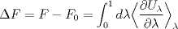
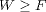
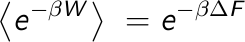
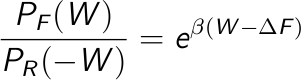
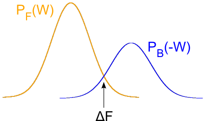
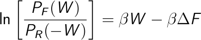
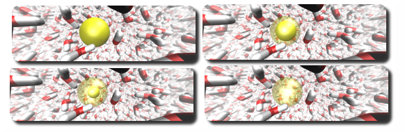

Practical 10: Free energy calculations from non-equilibrium dynamics
A. Introduciton
In a previous tutorial we learned two methods to compute Free Energies
associated to a given thermodynamic process: the solvation Free Energy of
sodium ions in water and the folding of a peptide in water.
In the first case we used Free Energy Perturbation (FEP), that takes advantage
of the fact that Free Energy is a state function. For an equilibrium process,
the Free Energy is independent on
the path the system takes to move from state A (no sodium in water) to state B
(sodium fully solvated in water).

As the sodium-water interactions were slowly
turned on, we recorded the changes in potential energy. Integration of these
potential energy differences over the morphing path yields the Free Energy.
To study the themodynamics of peptide folding, we relied on the Boltzamn
probability distribution of themodynamic ensembles in equilibrium. The
relative population of folded and unfolded states was extracted from a
molecular dynamics simulation, which gives direct access to Free Energy differences.
So far we have used equilibrium dynamics to compute Free Energies: the
transition between states is done infinitely slow, or reasonably slow, and the
work performed/gained is equal to the Free Energy. By extracting Free Energies
from equilibrium simulations we have to make sure that the system fulfills a
Boltzmann equilibrium. In practice this means that we have to sufficiently
sample the phase space available. While this is conceptually not a problem, in
practice this poses a problem for systems with many degrees of freedom and long
relaxation times.
- The Jarzynski equation
As a follow up, today we will learn that we can use non-equilibrium dynamics to
compute Free Energies. Although several new relationships for non-equilibrium thermodynamics
were found during last century, the link between the work and the Free Energy remained
as an inequality: the work is always greater or equal to the underlying equilibrium Free
Energy (  ). It was not until the very end of last century (1997-1998) that new
expressions directly relating the work and the Free Energy were found. The first one, known
as the Jarzynksi equation, relates the ensemble average over an exponential distribution
of the work with the Free Energy.

This relationship turned out to be extremely useful, as it allows,
for example, to compute binding Free Energies of ligands by repeteadly enforcing the unbinding
and recording the work distribution.
This process can be mimicked in a computer experiment, with the advantage that the simulation
times are reduced due to the fast non-equilibrium trajectory. Nevertheless, several experiments
have to be carried out to get a reasonable estimate of the work distribution.
- The Crooks theorem
Yet another non-equilibrium relationship, even more fundamental, was put forward by Crooks in
1999. The expression is grounded on microscopic reversibility, and one useful theorem derived
from it is the Transient Fluctuation Theorem (TFT).
The former relates the ratio of the work distribution for a Markovian process that moves from
state A to state B and from state B to a A with the dissipated work involved in
the transformation. Look at the wikipedia
page for more information, if you're interested.

A first approach is to estimate the free energy as the work value W where both distributions overlap, PF(W) = PB(-W):

A second approach is to take the logarithm of the Crooks equation,

Then, plot the left side of this equation vs. the work, which is a straight line, and estimate the free energy from the intercept.
Today we will take advantage of these recent breakthroughs to compute Free Energies
( an equilibrium property ) from non-equilibrium processes. To illustrate the capabilities of these
relationships we will first study the solvation Free Energy of an ion in water, now by means of
several fast (non-equilibrium) Free Energy Perturbation simulations. A second application
of non-equilibrium relationships will serve us to elucidate the Free Energy profile for an ion
permeating through a peptidic ion channel.
Go back to Contents
B. Solvation free energy of a sodium ion in water using the Crooks theorem
This exercise uses the same simulation technique (FEP) previously introduced in these
tutorials. We learned that sufficiently long simulations were needed to obtain a converged
value for the solvation Free Energy, where the morphing parameter lambda was slowly changed
from 0 (no ion-water interactions) to 1 (all interactions switched on).

Another way of computing the solvation Free Energy would be to perform
multiple (fast) simulations. Some will drive the system from an equilibrated
state A (lambda = 0) to a final state B (lambda = 1). We will call such a
process the Forward transformation. Additionally, some will be perfomed in the
opposite direction (Reverse transformation), e.g. an equilibrated system in the
B state will be transformed into state A. By collecting the work performed in
either Forward or Reverse transformation we can obtain their respective
probability distributions. Recalling Crooks' Transient Fluctuation Theorem we
know that the point where the two probability distributions meet the dissipative
work is zero. Hence, at this point the work will equal the Free Energy.
For the exercise we will need a set of starting structures in the initial (no sodium-water interactions)
and final state (all interactions present). Recall that while the interactions are not acting (state A),
the ion is actually present in the simulation box. Additionally, we need a topology file describing the
interactions in the system and a MD parameter file.
In this zipped
folder you will find all the files needed for the exercise.
Once you have donwloaded the file, use the following commands to extract its contents
tar -xvzf practicum_crooks.tar.gz ; rm -f practicum_crooks.tar.gz
or, if you downloaded to the default 'Desktop' folder:
tar -xvzf Desktop/practicum_crooks.tar.gz ; rm -f Desktop/practicum_crooks.tar.gz
Now move to the extracted directory:
cd practicum_crooks
There you will find one folder that contains the necessary
files for the simulations in Forward direction and another one for the Reverse transformation.
As a first approximation, we will compute one very fast FEP simulation in the forward direction. In this
case the lenght of the simulation is just 10 ps. During this time the morphing parameter will be switched
from 0 to 1 in increments of 0.0002. Let's go for it,
cd fast_FWD
Prepare the MD run by issuing
gmx grompp -f forward.mdp -c fwd_snapshot.pdb -o fwd_run.tpr -p topol.top
And start the simulation like this,
gmx mdrun -s fwd_run.tpr -v
The molecular dynamics program generates, as you know, a dhdl.xvg file that contains the
dG/dlambda as a function of time. We will integrate the curve with respect to the time and
finally divide by 10 (the simulation time), exactly as we did last practical.
Open the file with xmgrace
xmgrace dhdl.xvg
and under "Data", select "Transformations", followed by "Integration", and press "Accept". Remember that the
result of the integration has to be divided by 10.
As you can see, the result is quite off the expected value, around -393 kJ/mol. As we know, this comes from
the dissipative contributions that arises due to the fast morphing.
We know that if the obtained "Free Energy" would be a state function, the value for the Reverse transformation
should be the same. Let's check it! Go to the folder were the input files for reverse FEP are located,
cd ../fast_REV
Here the initial state is the sodium ion fully hidrated in water. As before, we prepare the input file
and run the simulation.
gmx grompp -f back.mdp -c rev_snapshot.pdb -o rev_run.tpr -p topol.top
gmx mdrun -s rev_run.tpr -v
Integrate the dhdl.xvg as we did before, remember to divide by 10!
As you can see, both results differ quite a bit. Since we performed the simulations too fast, the
difference of the computed "Free Energies" is not zero, we apply/obtain work to/from the system.
Question:
... but what happens if we average the two results (Forward and Reverse)? Does the result get closer to the actual converged
result for the Free Energy difference (around -393 kJ/mol)? Why does this happen?
A way to improve the results is to actually use Crooks' TFT. This demands getting a probability distribution
for the work (our non-converged Free Energies) in the Forward (lambda 0->1) and Reverse (lambda 1->0) directions.
It is important that the initial state of the system is in thermodynamic equilibrium. The initial structures you will
use for the Forward and Reverse simulations were obtained from different snapshots of equilibrated simulations at
lambda 0 and 1 respectively.
Since the method implies running many simulations in each direction, we will use a set of simple shell scripts (tiny programs that
make life easier when dealing with repeated tasks). Don't worry if you don't really understand
the syntax, the basic steps you already know: prepare input file based on structure, interaction parameters and
MD input file.
We can start with the Forward runs.
cd ../FWD_RUN_TFT
You can see that there are several folders, each containing the inital structures.
Let's create the input files (so called tpr files) for the simulation runs first. From
the FWD_RUN_TFT directory execute
First install csh with:
sudo apt-get install csh
and run the follwing script:
./create_tpr.csh
Now we can start the dynamics. The next command executes the script that takes care
to start each simulation sequentially,
./do_md.csh
>>> ( Since it takes some time to compute each run, approx. 1 minute each, you can
use the time to read the theory above and/or the introduction for next exercise ) <<<
If all went fine, we should have a dhdl.xvg file in each folder.
Estimation of the free energy as the intersection point of the forward and backwards work distributions
The next step will be to
compute the work for every run and put the data in one file. Luckily you don't have to
integrate every single dhdl.xvg file by hand. The next script takes care of it: it enters
each folder, integrates the FEP file and even divides by the simulation time!
export LC_NUMERIC=en
./gather_work.csh
The first command makes sure that the scripting language AWK uses dots as the decimal separator.
The second outputs the results to the screen. To write them directly in a file, say Work_fwd.txt, do the following,
./gather_work.csh | grep -v csh > ../Work_fwd.txt
Good, now will do the same but for the reverse simulations. To save the time
required for the simulations. we have already done these for you, and we can
now simply collect the result:
cd ../REV_RUN_TFT
./gather_work.csh | grep -v csh > ../Work_rev.txt
We now generated a series of possible work values for the forward and reverse FEP. Ideally, we would
compute enough values to estimate a probability distribution of the work. If we don't have any extra information
on the distribution function, it is necessary to have an overlap between the two distributions, since Crooks' TFT
states that the work value that equals the true Free Energy is the one which has the same probability in the
forward and in the reverse distribution.
We will generate histograms (or numerical estimates of unormalized probability distributions) for both work
distributions with xmgrace,
Open them both directly with
cd ..
xmgrace Work_fwd.txt Work_rev.txt
To compute histograms, first of all create a new graph : go to "Edit" -> "Arrange Graphs" and set the "Cols" value to 2.
Apply the changes and Close. Now you have two graphs. To compute the histograms, go to "Data" -> "Transformations" and
click on "Histograms". From the "Source" list click now on the first (G0) and then the first "Set" (GO.SO). As a "Destination" list select the
second (G1). Now have a look at the values you have for the distribution, typically between -420 to -360. Use these numbers
as "Start at" and "Stop at" and something like 40 bins. The more data points,
the more bins we could use. Click in "Normalize" and then press "Apply" to
perform the histogram on the first data set. To obtain one for the second data set, simply select (G0.S1), under the second
"Set" in the first graph in the "Source" list and press "Apply". In order to see the histograms, select the new graph by clicking it with the mouse and then
press the "AS" (for Auto Scale) button on the upper left.
Question:
Based on the two adjacent histograms, which is the estimate for the Free Energy value? How could we
improve the estimate? Do you think that 10 data points can create a significant ensemble?
Let's try increasing the number of transitions. We have prepared 400 short 5 ps simulations for both the forward and the backwards transitions. You can download here all the output dhdl.xvg files.
First extract the contents of the folder and get in the extracted folder
tar -xzvf 400runs.tar.gz
cd 400runs/FWD_RUN_TFT
Now repeat the steps of the previous section to extract the work from each dhdl.xvg file, gather all work values into a txt file, and create the histograms for both the forward and reverse transitions.
Question:
Which is the new estimate for the Free energy based on the intersection point of the distributions? How does this estimate compare to the previous calculations?
OPTIONAL: Estimation of the free energy taking the logarithm of the Crooks equation
Once you obtained the work distributions, it is possible to estimate the free energy taking the logarithm of the Crooks equation (see here ). You should extract the portion of both distributions in which there is an overlap, and PF(W) and PB(-W) are not zero (to avoid singularities). Then, plot ln ( PF(W) / PB(-W) ) as a function of W and do a linear regression. The slope of this curve is β = 1/KT and the intercept is -βΔ F
Questions:
How much does the regression deviate from a straight line? How does the estimate of β = 1/KT compare with the input value, β = 1/(2.5 kJ/mol) , at the given temperature of 300 K? What is the estimate of the free energy? How does it compare with the previous estimations?
Go back to Contents
Further references:
Books:
- Editors: Chipot C. , Christophe A. et al., Free Energy Calculations , Springer Series in Chemical Physics, Vol. 86, [link] .
Advanced reading:
- C. Jarzynski Nonequilibrium Equality for Free Energy Differences Phys. Rev. Lett.. 78: 2690 (1997). [link]
- C. Jarzynski Equilibrium free-energy differences from nonequilibrium measurements: A master-equation approach Phys. Rev. E. 56: 5018 (1997). [link]
- G. E. Crooks. Nonequilibrium Measurements of Free Energy Differences for Microscopically Reversible Markovian Systems J. Stat. Phys. 90: 1481 (1998). [link]
- Goette M, Grubmuller H, Accuracy and convergence of free energy differences calculated from nonequilibrium switching processes. J. Comp. Chem. 30: 447-456 (2009). [link]